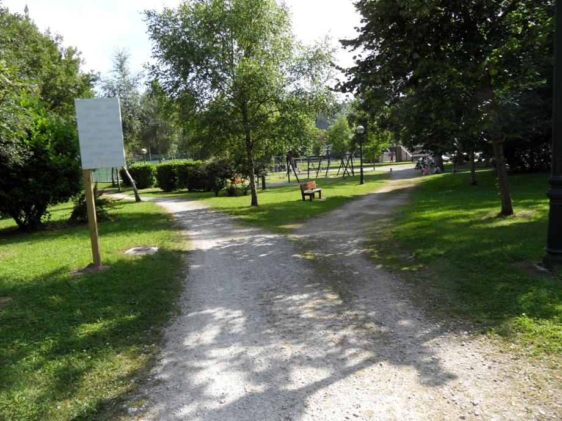

|
Ls Via Verde está dotada de especiales cualidades: máxima accesibilidad, facilidad y seguridad. Es un lugar ideal para promover la movilidad sostenible y la práctica del paseo y el cicloturismo, especialmente atractiva para personas con movilidad reducida.

|
Lugares de interes
Vía Verde
La Lechera
|